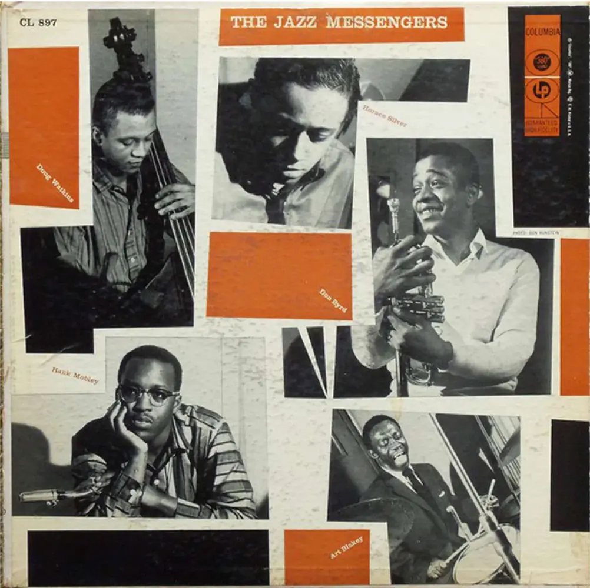
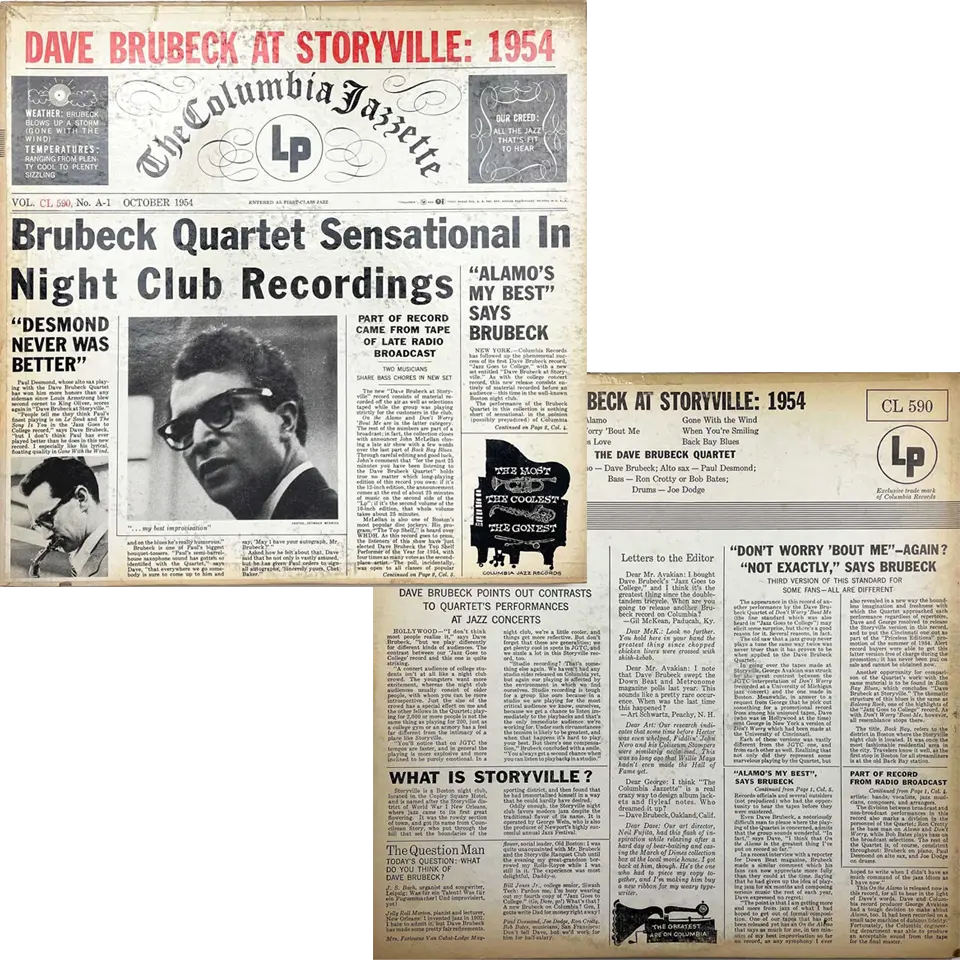
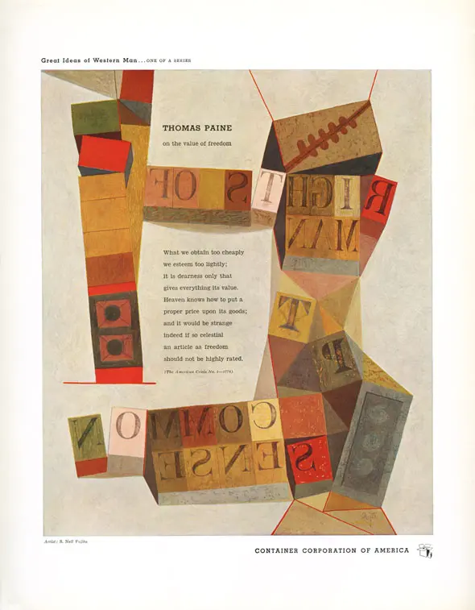

Interactive
Storytelling
S. Neil Fujita Biography
Visual Design (UI), Web Development
Overview
S. Neil Fujita, a Hawai‘i-born Japanese-American graphic designer, was one of the titans shaping the history of American graphic history. He helped define the visual language of mid-20th century pop culture such as jazz album covers, book jackets, and iconic logos. Alongside his design works, his writing inspired generations of designers as well — including Michael Bierut, who credited Fujita’s influence as a starting point of his career.
Born in 1921, Fujita’s journey was not easy to navigate both personally and professionally. Even today, his story resonates with designers from underrepresented backgrounds.
Challenge
Despite Fujita’s extensive and influential body of work, there are few dedicated spaces that showcase his achievements. His life story is as inspiring as his designs, yet tracing his journey more than a century after his birth presents a challenge.
To tackle these challenges, I focused on curating his most iconic works while visually narrating his life through an interactive timeline that connects his personal milestones with historical events. Another key challenge was translating his aesthetic essence into a modern digital medium. All of Fujita’s work was created for print and has not been widely adapted for digital platforms.
Inspirational source
Inspirational source
Inspirational source
Solution
The answer to the above question, “how could I bring the look and feel of his print-based designs into an interactive website?” was found in Fujita’s works and the period he lived — colors from his artwork, layout and structure from his graphic designs, and the journey starting from Hawai‘i.